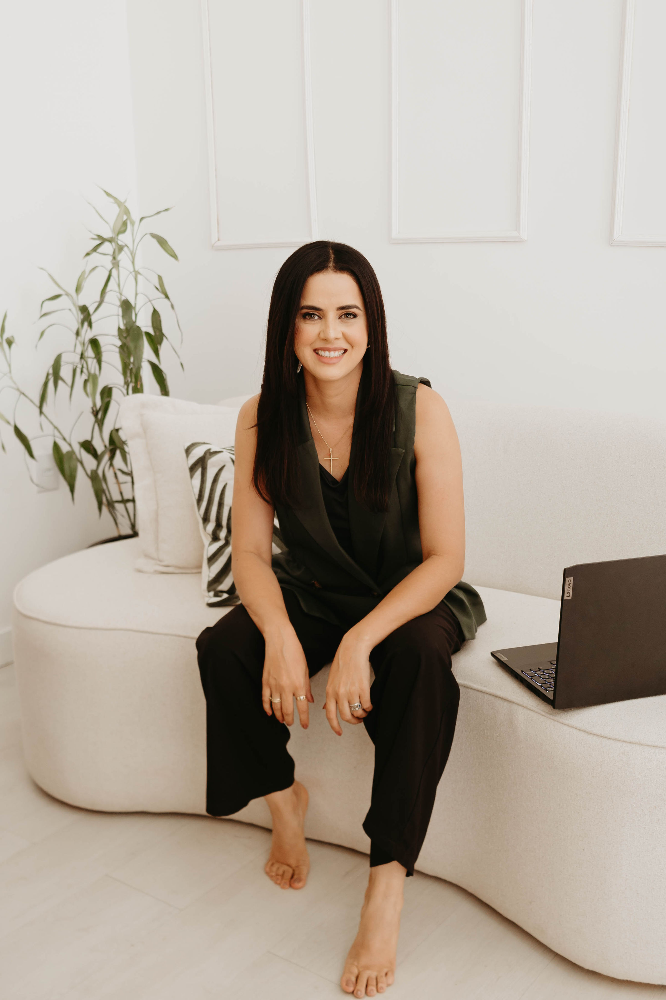

Rosane Borges
Fundadora / Diretora
Paisagismo autoral com leitura t?cnica, implanta??o orientada e jardins desenhados para amadurecer com eleg?ncia.


Rosane une forma??o em agronomia, doutorado em Produ??o Vegetal e experi?ncia de campo para desenhar jardins que amadurecem com eleg?ncia. Cada escolha considera solo, insola??o, esp?cie, escala e manuten??o prevista.
Engenheira Agr?noma e Paisagista.
Doutora em Produ??o Vegetal com ?nfase em plantas ornamentais.
Atua??o desde 2016 em resid?ncias e projetos selecionados.
Projeto e implanta??o com orienta??o t?cnica do in?cio ao p?s-obra.

Fundadora / Diretora
Web Developer